Identita domu
Dům mezi 666 a 671 (skica KSPPOP 666 | 673 | 671, GIS budova 1133 s popiskem 673). Fotografie ukazuje hladkou modernizovanou fasádu: v přízemí okno, dveře a okno, v patře dvě široká okna a okénko. Plán J. Lienerta z roku 1883 a skica J. Herdy z roku 1934 zachycují starší stav a pro fasádu použity nejsou.
Použité prameny: fotografie cp_673_001 (rektifikovaná 10,49 × 7,3 m), skica KSPPOP cp_673_001, GIS půdorys 1133; plány 1883 a 1934 jen pro srovnání.
Kde je dům na fotografiích
Dům je na snímku v červeném rámečku, sousední domy jsou popsány čísly a každý otvor má ID, podle kterého se počty otvorů kontrolují proti modelu. Kliknutím otevřete větší obrázek.

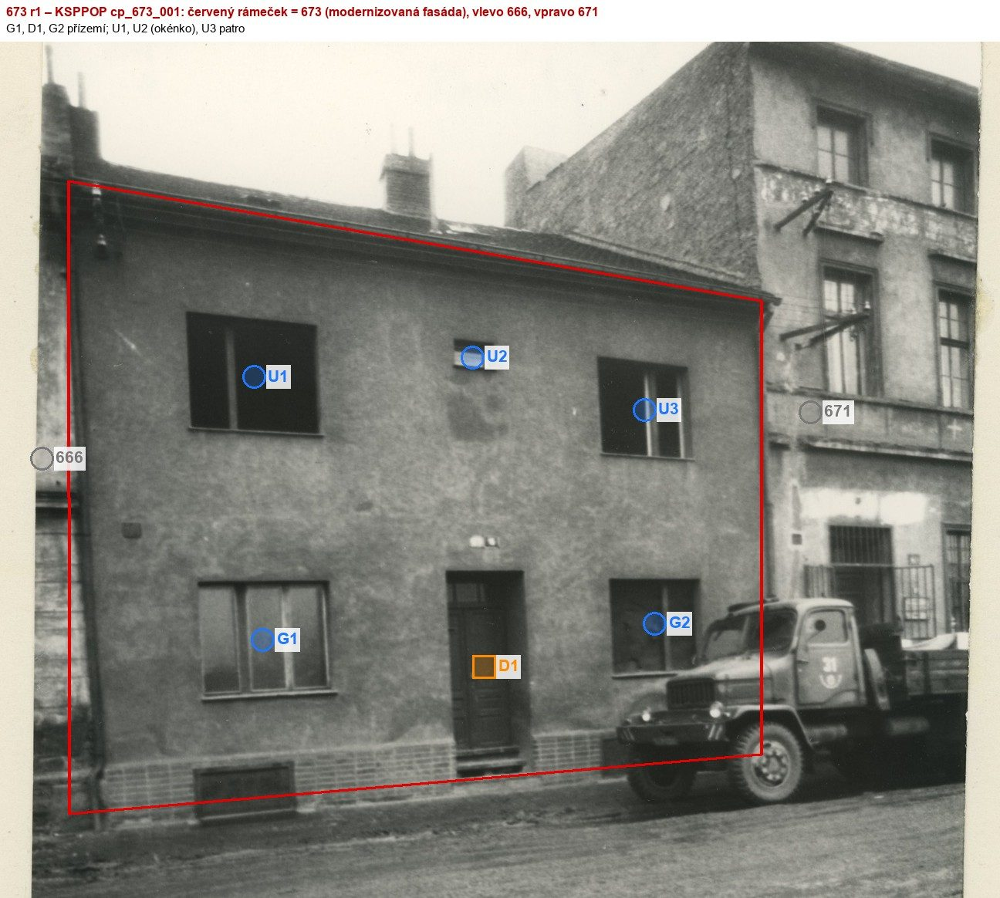
U2 = malé okénko nad dveřmi
Přílohy v databázi (8)
Všechny přílohy struktury 673 v databázi Libuše, načtené živě 25. 10. 2026 (jen pro čtení) a otevřené. Kliknutím otevřete větší náhled.

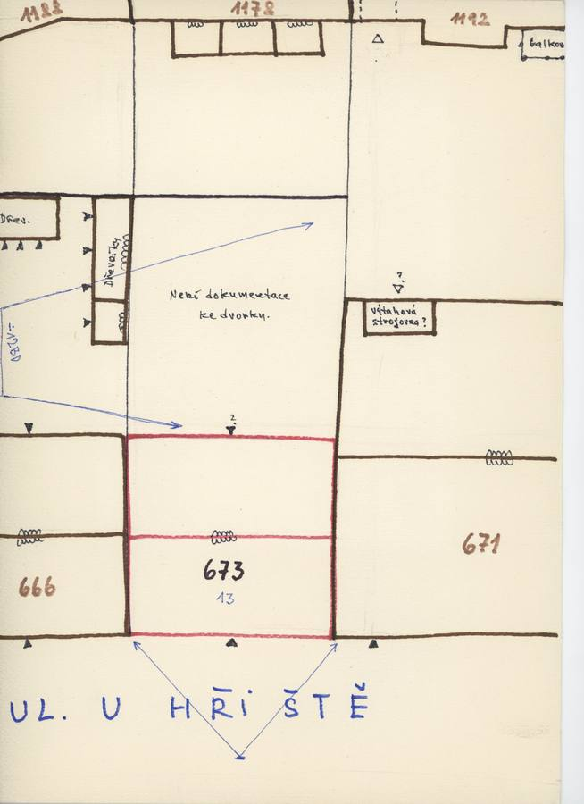
plán / výkres
SHA-256 02d6a796af95…

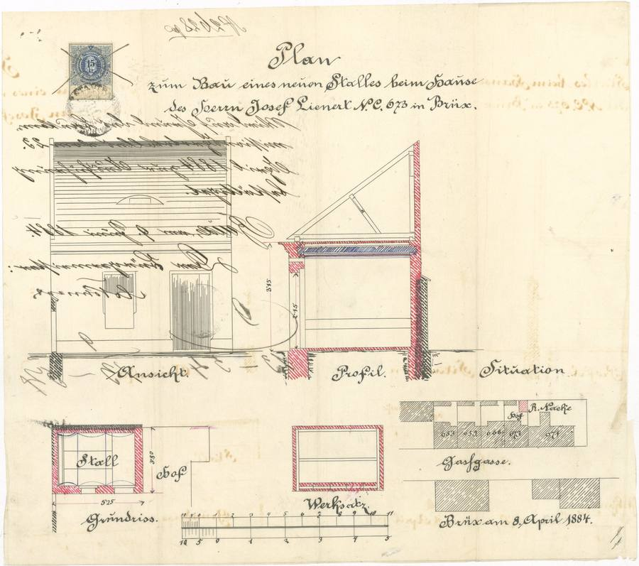
plán / výkres
SHA-256 ad22d1ab123f…

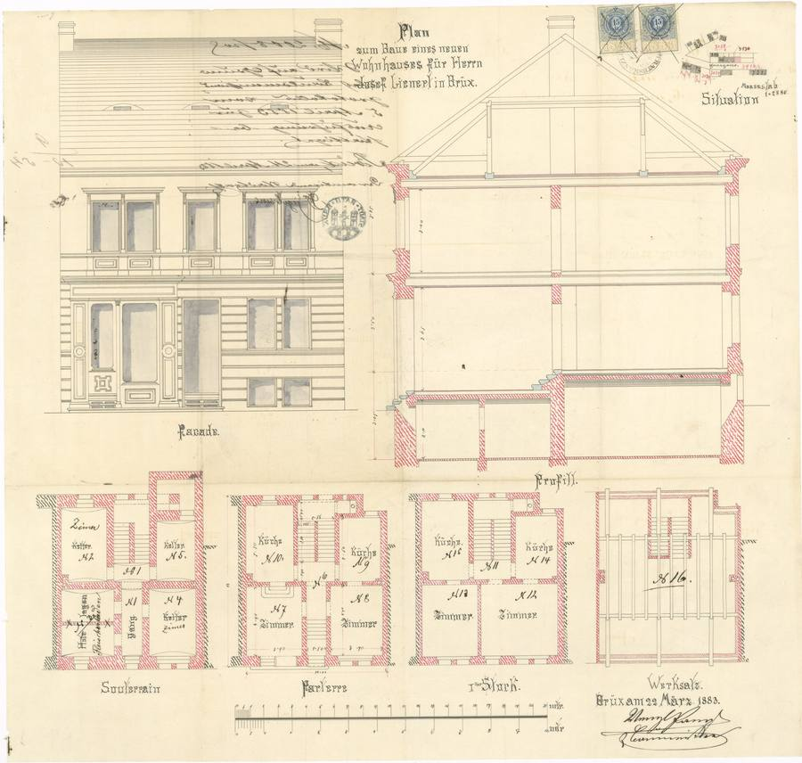
plán / výkres
SHA-256 292cc8c7e8e4…

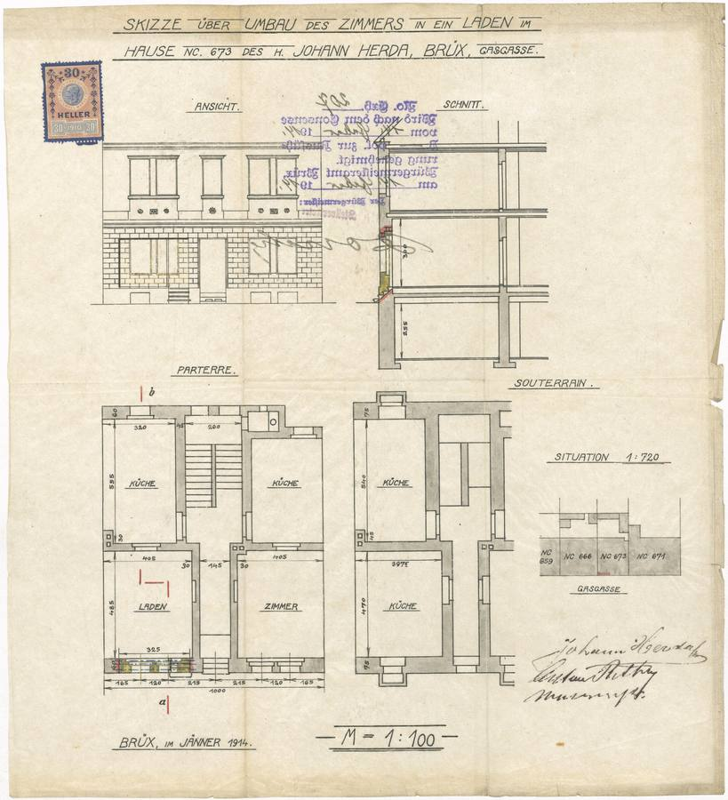
plán / výkres
SHA-256 890c9d9310f8…

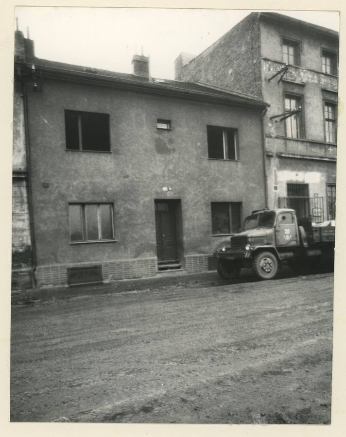
fotografie
SHA-256 b191c939fe77…

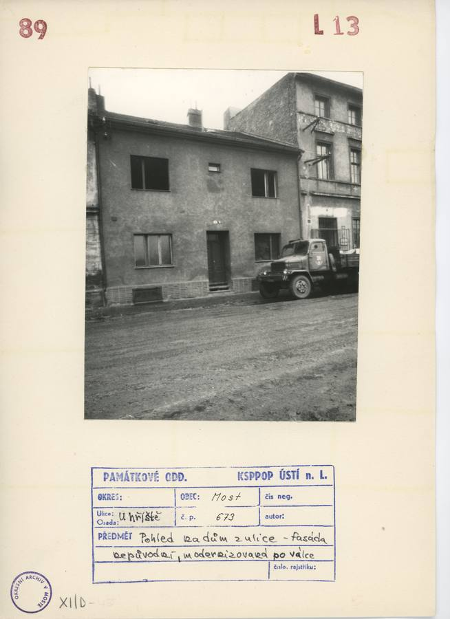
archivní karta
SHA-256 60dd52cd16dc…

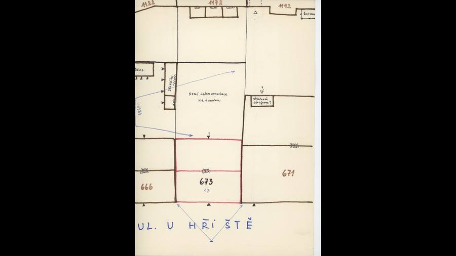
kopie bez tagu (1920 × 1080)
SHA-256 2d45bdaf3bb4…

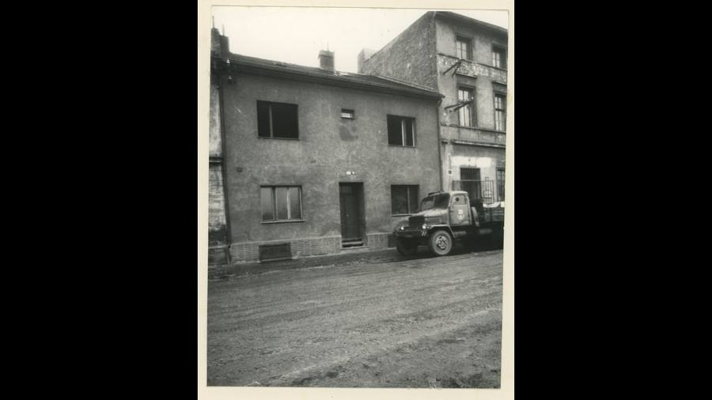
kopie bez tagu (1920 × 1080)
SHA-256 8db548b2961e…
Geometrie
| Revize geometrie | r1 |
|---|---|
| Úsek ulice | S2 · severozápadní strana VSV ramene |
| Poloha | GIS budova 1133, popisek 673, ulice U hřiště (1938 Seligerova) |
| Šířka průčelí | 10,49 m |
| Výška okapu | 7,30 m (odhad) |
| Podlaží | 2 |
| Střecha podle pramenů | sedlová střecha s hřebenem podél ulice (fotografie) |
| Otvory / vikýře v modelu | 6 / 0 |
| Polygonů | 146 |
Kontrolní pohledy

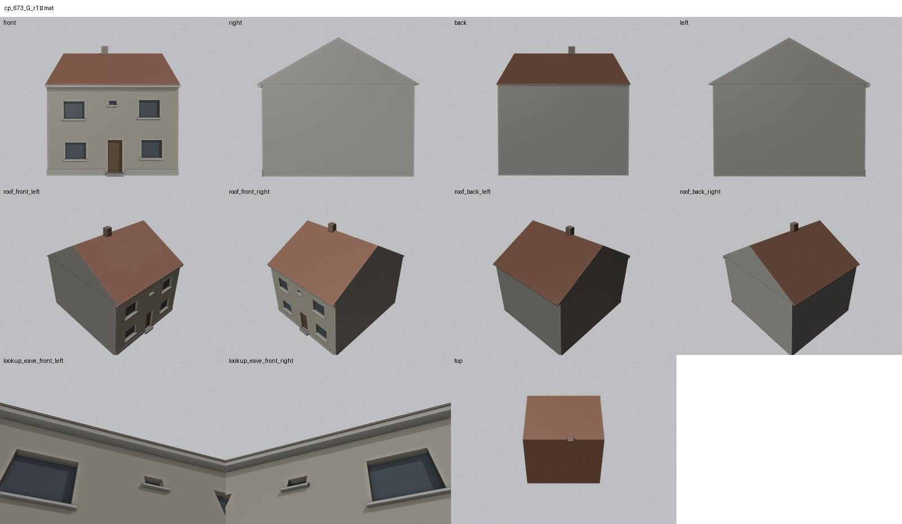

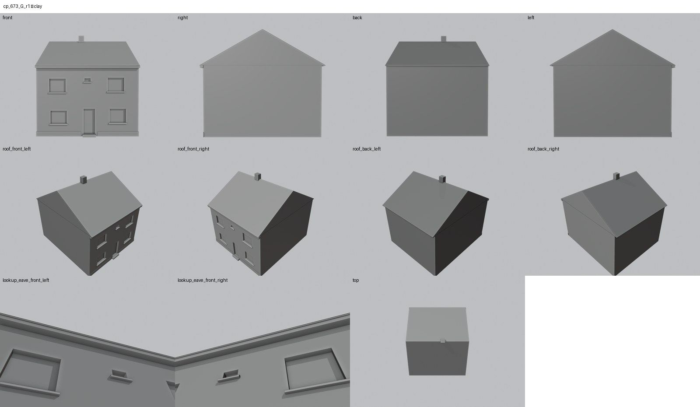

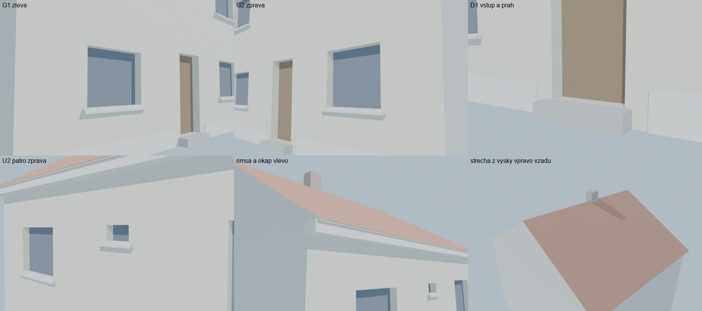
Kontrola modelu
| Brána geometrie (automaticky) | v pořádku |
|---|---|
| Uzavřené podkroví (GLB) | v pořádku: zásahy paprsků 1, nekryté zdivo 0,00 m², střecha nad prázdnem 0,00 m² |
| UV mapování | v pořádku: 0 zkolabovaných ploch z 146 |
| Síť | v pořádku |
| Počty otvorů proti pramenu | souhlasí |
| Vizuální kontrola | prošla (Claude (Opus 5.5), 2026-10-25) |
| Kontrola střechy | prošla |
- hlavní průčelí: U2 = malé okénko nad dveřmi (souhlasí)
Textury
zatím bez textur
Až Codex dodá texturovaný model, objeví se v prohlížeči nahoře volba Textury (Codex).
Hypotézy
Vše níže je model_hypothesis, provisional, locked: false.
- výška okapu 7,3 m je z rektifikace (svislé měřítko nejisté)
- vzepětí střechy 3,6 m je odhad
- dvorní průčelí je bez otvorů
Technický zápis hypotéz v plánu modelu (revize r1, bez diakritiky)
- vyska okapu 7,3 m z rektifikace (svisle meritko nejiste)
- vzepeti 3,6 m odhad
- dvorni pruceli bez otvoru
Historie revizí modelu
- r1 25.10.2026: prvni stavba - otvory z rektifikovane fotografie KSPPOP (modernizovany stav)
Soubory
- Geometrie čp. 673, GLB (revize r1)
- Pracovní model: F:\MOST\output\u_hriste_street_claude_2026-10-25\houses\cp673\r1\cp_673_G_r1.blend
- Plán modelu: F:\MOST\output\u_hriste_street_claude_2026-10-25\houses\cp673\geometry_plan.json